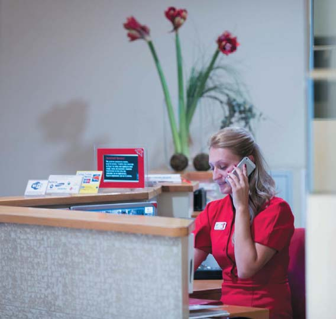
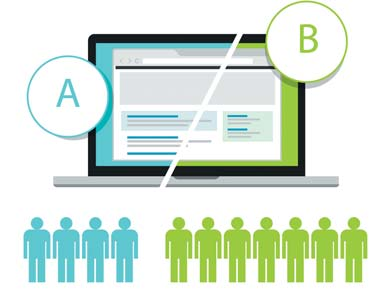
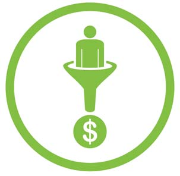
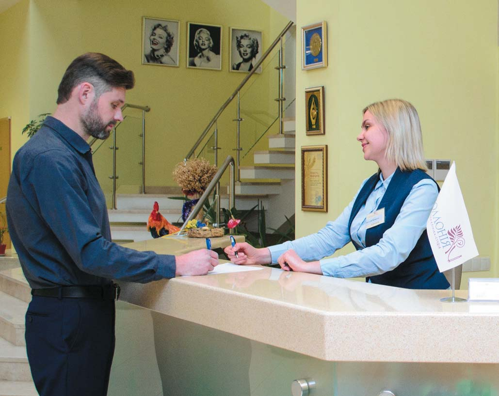
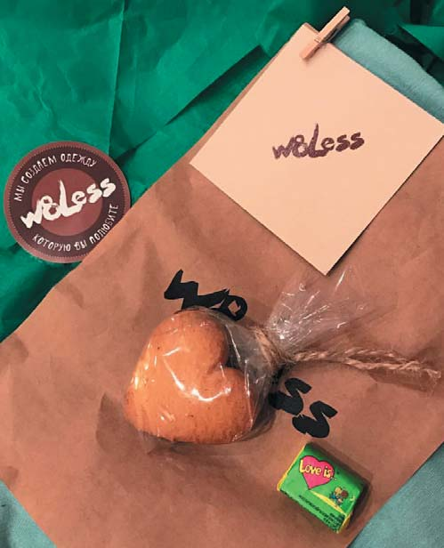

Своя справа · журнал «ДентАрт» 2017 №1
Базові аспекти сервісу у стоматологічній клініці
BASIC ASPECTS OF SERVICE IN DENTAL PRACTICE
Кожен бізнес — це складний механізм, який працює за своїми власними правилами і стандартами. Іноді ці правила повторюють загальноприйняті моделі, а інколи відхиляються від них. Деякі організації створюють нові стандарти у себе в регіоні чи навіть у цілій галузі.
Найчастіше бізнес-машини відступають від стандартів і втрачають частку продуктивності, іноді навіть не помічаючи цього. Зниження ККД має наслідком втрату і доходу та чистого прибутку, і найкращих співробітників. У результаті цих подій крива життєздатності компанії може набрати негативного курсу. Завдання власника або керівника — не лише уникнути подібних негативних тенденцій, але й привести свою бізнес-одиницю до стабільного зростання і розквіту, незважаючи на будь-які кризи і потрясіння.
Уявимо на хвильку, що всі лікарі й асистенти у вас мотивовані, професійні, навчені і вирішують складні клінічні завдання успішно і з задоволенням. Ви недавно зробили дизайнерський ремонт у залі очікування для пацієнтів і оновили фасадну частину з вивіскою. Усе складається в ідеальну картинку, але частина пацієнтів незадоволена і рівень повторних звернень далекий від очікуваного.

Адміністратори клініки Ярослава Заблоцького (м. Львів) заслужено мають репутацію сервіс-орієнтованих.
А що у вас з адміністраторами?
На перший погляд, посада адміністратора — це проста, зрозуміла робота, з якою впорається будь-яка людина, здатна до спілкування з іншими людьми. Часто складається ситуація, коли на посаду адміністратора беруть молоду дівчину з вищою освітою, без досвіду роботи, але з бажанням працювати і з вогником в очах. Протягом кількох днів нового співробітника навчають азам роботи і м'яко впроваджують у виробничий процес під наглядом досвідченої колеги. Зазвичай навчання адміністратора займає не дуже багато часу і основний процес пізнання тонкощів відбувається на практиці, методом проб і помилок. Найчастіше навчання на цьому закінчується.
У цій статті я хочу звернути увагу на три аспекти роботи адміністратора:
- Конверсія вхідних дзвінків та візитів, або чому вкладення в рекламу не мають сенсу.
- Базисні аспекти сервісу стоматологічних послуг і перевищення очікувань.
- Робота над помилками — шанс виявити турботу про пацієнта.
Ні для кого не секрет, що між послугою і споживачем зазвичай діє маркетинг, який включає справедливу (за уявленнями покупця) ціну, набір характеристик послуги (вона повинна повністю задовольнити потребу клієнта, до того ж у зручному місці), і процес просто зобов'язаний бути якомога комфортнішим. Це одна з варіацій маркетинг-міксу, запропонованого Джеромом Маккарті в далекому 1960 році.
З року в рік статті у бізнес-журналах закликають вкладати гроші в рекламні кампанії і просування бренду. У звичайної української стоматологічної клініки не завжди є ресурси для роботи із серйозними рекламними агентствами. Що ще гірше, найчастіше немає ні ресурсів, ні кваліфікації, щоб відстежувати ефективність реклами. Виходить, що керівники і власники керуються досвідом попередніх років або натхненням, часто забуваючи про те, що всі люди різні і один і той самий рекламний банер може викликати різний ефект у різних груп споживачів. Які цифри скажуть вам, що ви влучили прямо в ціль? У кожного відповідь своя, і не можна сказати, що ця відповідь правильна, а інша ні.
Конверсія вхідних дзвінків і візитів
Оскільки однією з головних цілей реклами стоматологічної клініки є залучення первинних пацієнтів, то цілком резонно було б на чолі показників ефективності поставити кількість нових пацієнтів, яких вдалося привести на консультацію та лікування. І обов'язково підрахувати вартість залучення первинних пацієнтів. Між великою кількістю телефонних дзвінків і чергою до кабінету стоматолога зачаївся ще один дуже важливий показник...
Припустимо, що до початку рекламної кампанії в клініку надходило 11 вхідних дзвінків від нових пацієнтів, а після двох тижнів активної реклами на радіо, на рекламних щитах і контекстної реклами в інтернеті кількість дзвінків зросла до 19 і продовжує зростати. Безсумнівно, що кількість консультацій і запис у клініці зросте. Але наскільки і як дорого потрібно заплатити за кожного нового пацієнта?
Завдання адміністратора — відповісти на дзвінок потенційного пацієнта так, щоб він записався і прийшов на консультацію, а пізніше скористався послугами клініки. Відношення тих, що записалися на прийом, до кількості тих, що подзвонили, називається конверсією. Якщо з 19 людей, що зателефонували, 4 оберуть для вирішення своїх стоматологічних проблем вашу клініку, то показник конверсії дорівнюватиме 4/19x100%, тобто 21%. До рекламної кампанії в клініку надходило 11 дзвінків, за аналогічного показника конверсії 11х21% на прийом записувалося в середньому два первинних пацієнти.
Керівникові варто звернути увагу на показник конверсії, а не на збільшення кількості звернень по телефону! Для цього існує кілька причин:
- збільшення конверсії найчастіше пов'язано з навчанням та оптимізацією процесів (це або дешевше реклами, або цілком безкоштовно);
- ніхто не заважає працювати над підвищенням кваліфікації адміністраторів і давати гарну рекламу одночасно (а ви готові впоратися з великою кількістю пацієнтів?);
- навчаючи своїх співробітників, ви працюєте на перспективу, а це означає, що ефект триватиме місяцями і роками, на відміну від рекламної кампанії, ефект від якої закінчиться разом з рекламним бюджетом.
Підвищенню конверсії дзвінків можна присвятити цілі книги, і все одно залишаться сліпі зони. Є кілька рекомендацій, визнаних багатьма керівниками як ефективні.
Професійне написання скриптів іноді знижує людяність телефонних перемовин, але у переважній кількості випадків дозволяє уникнути банальних помилок і підняти планку якості та конверсії на новий рівень.
Навчання адміністратора роботі із запереченнями передусім допомагає персоналові зрозуміти співрозмовника, адже вчить слухати й чути, а практично для кожної людини важливо, щоб її почули і вислухали. Лише після з'ясування всіх деталей пацієнт буде готовий сприймати інформацію.
Виведення телефонних переговорів в окремий call-центр вирішує проблему вічної багатозавданнєвості працівників передньої лінії. Зосередившись тільки на тому, хто телефонує, адміністратор зможе якісніше провести телефонні переговори, що забезпечить високий відсоток успішних телефонних дзвінків. Вам здається, що це дорого чи непрактично? Спробуйте порахувати упущену вигоду за останні кілька років роботи.
Підбір сервісних працівників і постійне всебічне їхнє навчання — запорука довготермінового успіху стоматологічної клініки. Бізнес-тренер Ігор Солодов провів чудову аналогію між процесом навчання і відвідуванням тренажерного залу. Роботодавець присвячує навчанню адміністратора один-два дні і сподівається, що всьому іншому співробітник навчиться у процесі роботи. А відвідавши два-три тренування у тренажерному залі, мало хто сподівається на видимі результати. Багато хто розуміє, що для появи заповітних кубиків пресу потрібно працювати три-чотири рази на тиждень, дотримуватися дієти і достатньо відпочивати вночі протягом мінімум шести місяців. Уявіть, яких захмарних результатів можна домогтися, працюючи над компетенціями команди два-три рази на тиждень по годині! Через шість-дванадцять місяців такої копіткої праці «сервісні біцепси» не залишать шансів конкурентам!


Завжди слід звертати увагу на показник конверсії.
Базові аспекти сервісу стоматологічних послуг і перевищення очікувань
Як часто ви ставите собі питання: «Чого пацієнт чекає від відвідин вашої клініки?» Здавалося б, що може бути нового в наданні стоматологічної допомоги? Погляньмо на досвід звернення у стоматологічну клініку Василя Петровича Петренка, у якого виникли больові відчуття в зубі 16.
Василь Петрович телефонує в клініку, пояснює проблему, узгоджує зручний час (часто намагається узгодити ще й вартість), приходить на призначену годину, недовге очікування, лікування (найчастіше якість стоматологічної допомоги пацієнтам складно оцінити об'єктивно), отримує подальші рекомендації, розраховується і йде в надії не повертатися якомога довше. Якщо припустити, що все відбулося без особливої вишуканості і люб'язності, то базисний рівень сервісу буде приблизно таким:
- на дзвінок відповіли, проблему записали і призначили час прийому;
- пан Петренко прийшов, залишив верхній одяг у шафі, почекав у приймальні (згущуючи фарби, припустимо, що пацієнта голосно покликали на прізвище: «Петренку, пройдіть у кабінет», інші пацієнти зі співчуттям подивилися на Василя Петровича);
- без особливих церемоній проблема із зубом 16 була вирішена протягом години, не завдавши значного дискомфорту;
- профілактичні рекомендації отримані на аркуші паперу, написані розбірливим почерком;
- після розрахунку, почувши «до побачення», пацієнт вийшов з клініки на свіже повітря і полегшено вдихнув на повні груди.

Адміністратор клініки-студії «Аполлонія» (м. Полтава) зустрічає пацієнта як бажаного гостя.
Потреба вочевидь задоволена, вартість лікування вписалася в бюджет без особливих ускладнень, до клініки було зручно добиратися навіть пішки, але бажання розповісти про чудесне зцілення і домашній затишок і не подумало виникнути. Заповітне сарафанне радіо так і не увімкнулося. «Довше б не з'являтися сюди» — сплинуло у Василя Петровича в думках, все-таки відвідини стоматолога для більшості людей — стрес.
Буває й інший сценарій, цього разу Василеві Петренкові пощастило трохи більше.
- Телефон було легко знайти в інтернеті на сайті клініки, візитка загубилася.
- На дзвінок відповіли приязно і навіть трохи заспокійливо, уважно вислухали, час прийому призначили, відразу після дзвінка прийшла підтверджувальна есемеска із зазначенням часу прийому, ім'ям лікаря та адресою клініки. За годину до призначеного часу прийшла есемеска з нагадуванням.
- У клініці адміністратор зустрів пацієнта усмішкою і привітанням на ім'я та привітав з днем народження сина (мудрий керівник наполіг на пошуку інформації про пацієнта в соціальних мережах), допоміг з одягом, запропонував кави, показав убиральню на випадок необхідності, провів до дивана і запропонував свіжі журнали (якщо візит не перший і адміністратор може записати в CRM систему уподобань пацієнта).
- До кабінету провели (працює принцип «не показати, а провести»), лікареві та асистентові нагадали ім'я та уподобання пацієнта (про все написано в CRM). Лікування пройшло чудово, проблему вирішили так само за годину, зуб 16 у повному порядку і більше не турбує.
- Рекомендації не лише дали, але й пояснили, навіщо це робити і на які довготермінові наслідки можна очікувати.
- Прощалися з пацієнтом, як з гостем, процес оплати відбувся непомітно за розмовою на абстрактні теми, для іменинника передали дрібничку на подарунок від доброго стоматолога.

Приємні та несподівані дрібнички викликають усмішку і бажання розповісти про це друзям.
Обидва приклади вирішують проблему пацієнта за однаковий час і з однаковим успіхом, але післясмак залишають різний. Пацієнти можуть роками бути задоволені лікуванням і звичайним обслуговуванням, хоча з такими клініками зазвичай легше розлучаються з різних причин — перехід лікаря в іншу клініку, підвищення цін, переїзд в інший район чи місто і так далі. І, найголовніше, такі клініки не так часто рекомендують своїм друзям і знайомим.
Ця ситуація повторюється в багатьох інших сферах нашого життя.
Наведу приклад із життя страхових компаній, який, безперечно, знайомий багатьом: оформлення страхування для виїзду за кордон. Проста процедура займає небагато часу, менеджерові в основному потрібно уважно дивитися на екран, щоб не допустити помилки. Клієнта обслуговує дівчина приємної зовнішності, але без емоцій у голосі. Оскільки їй потрібно весь час дивитися в екран, контакту очима практично немає. Холодним голосом вона уточнює деталі, і через 15 хвилин страховий поліс уже готовий. Потреба задоволена, але чи поїде клієнт саме в цю страхову компанію, якщо опиниться в іншому місці, звідки буде їхати далеко або незручно? Швидше за все, ні, усі поліси страхування такі схожі один на одного! І звичайно ж, найліпше буде, якщо цей поліс клієнтові привезуть прямо на роботу з побажаннями добре з'їздити.
Робота над помилками
Світові експерти сервісу, такі як Джон Шоул і Рон Кауфман, вважають, що помилки в сервісі — це подарунок для клієнтоорієнтованих компаній.
Коли персонал — адміністратор чи асистент — допустили помилку, у них є шанс продемонструвати, як сильно вони піклуються про своїх клієнтів.
Перше, що рекомендують гуру, — це вибачитися і взяти провину на себе. Не важливо, хто винен і що сталося. Це мінімум, який повинен знати і використовувати кожен працівник (це не стосується обговорення гарантійних зобов'язань щодо виконаної роботи). Часто можна зустрітись із ситуацією, коли пацієнт просто помиляється в якомусь питанні — чи то час прийому, який пацієнт неправильно зрозумів (але вам же надійшла есемеска!), чи повторний візит, і працівник клініки наполегливо доводить свою правоту. Йому це безумовно вдасться, тільки пацієнт піде з ображеними почуттями, незалежно від того, хто має рацію. Не змушуйте своїх пацієнтів відчувати негативні емоції!
Еталоном вважається ситуація, коли після вибачення персоналу клієнт починає сам просити вибачення за подію і брати провину на себе. Це означає, що він переконався, наскільки клініка, її працівники дорожать кожним пацієнтом. Слід також завжди тримати в голові вартість залучення первинних пацієнтів за допомогою реклами. У більшості випадків ця сума значна і нагадує всім, що кожного пацієнта потрібно цінувати, незважаючи ні на що.
Друге, на думку професіоналів сервісу, — це наявність п'яти компенсаційних пакетів, які можна запропонувати як компенсацію. У ці пакети має входити щось, що має цінність для клієнта, але низьку собівартість для вас. Гарним прикладом такої компенсації може стати безкоштовний напій у кав'ярні, для клієнта це приємно, а для закладу буде коштувати п'ять-десять гривень. Не варто пропонувати як компенсацію брендовані ручки, блокноти і все, що ви роздаєте без особливого приводу.
Працівники не повинні боятися користуватися своїм правом надати компенсацію.
Досягнення ефекту синергії
Сьогодні, говорячи про маркетинг і сервіс як одну з граней маркетингової стратегії, усе більше компаній і організацій звертають увагу на внутрішній маркетинг. Головний клієнт — це співробітник. Керівник не може розраховувати на клієнтоорієнтованість, якщо ставлення до співробітників грішить диктатурою і образами. Світові гіганти, як Google і Facebook, прагнуть наймати не «зоряних» програмістів і продавців, а командних гравців, здатних вписатися в колектив і допомогти досягти ефекту синергії.
Перше, що може спасти на думку, коли йдеться про рекомендації щодо роботи з колективом, — працівники заслуговують того самого, що й пацієнти. Така ж смачна і запашна кава або чай, цукерки чи печиво, увага до дрібниць і деталей... Будь-який член команди, який відчуває турботу, транслює таке ставлення пацієнтам. А це ж і є ваша мета — вищий рівень сервісу!
Висновки
На довгих дистанціях набагато ліпше почуваються клініки, які дорожать своїми клієнтами і розуміють, що неможливо залучити велику кількість пацієнтів лише за допомогою рекламної кампанії.
Безперервне навчання і підвищення кваліфікації важливе не лише для лікарів-стоматологів, але й для інших працівників вашої клініки.
Слід працювати не тільки над кількістю первинних пацієнтів, але й над показником конверсії.
Перевищуйте очікування своїх пацієнтів і навчіться навіть з помилок отримувати користь — ваші пацієнти віддячать вам лояльністю.
Література
- Л. Ингильери, М. Соломон. Выдающийся сервис, отличная прибыль. –Издательство: Манн, Иванов и Фербер, 2012. —С. 23-29.
- В. Антощенко. Ух ты! Сервис. —Издательство: Альпина Паблишер, 2016. —С. 39-43.
- Дж. Шоул. Первоклассный сервис как конкурентное преимущество. –Издательство: Альпина Паблишер, 2015. С. 42-61, 66-67, 141-155.
- Ron Kaufman. Uplifiting service. Р. 103-111.
- John R. Dijilius III. What's the secret? To providing world-class customer experience. Р. 18-24.
- John Cotton. How to grow your dental practice in the new economy. Р. 23-25.